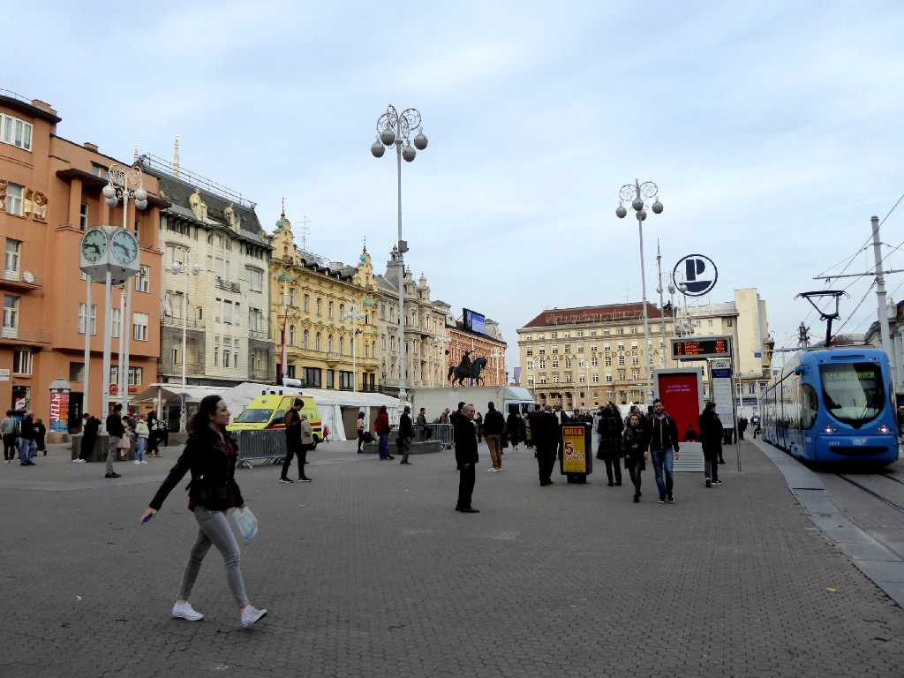
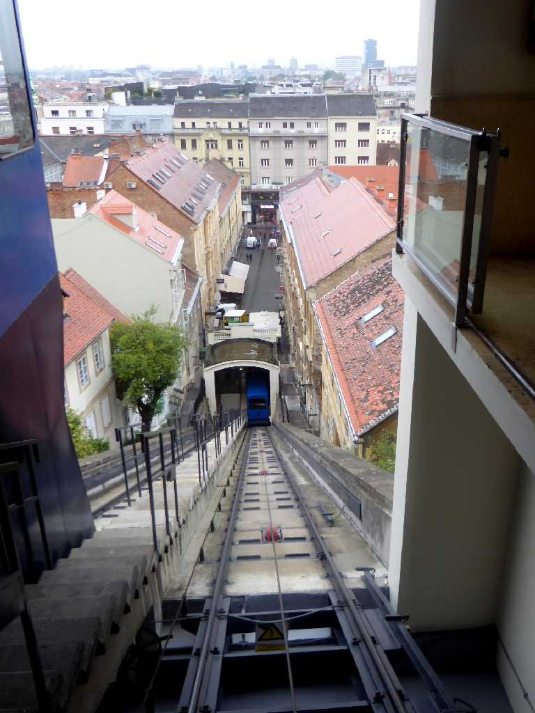
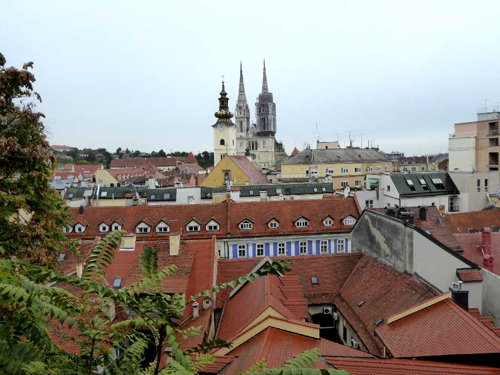
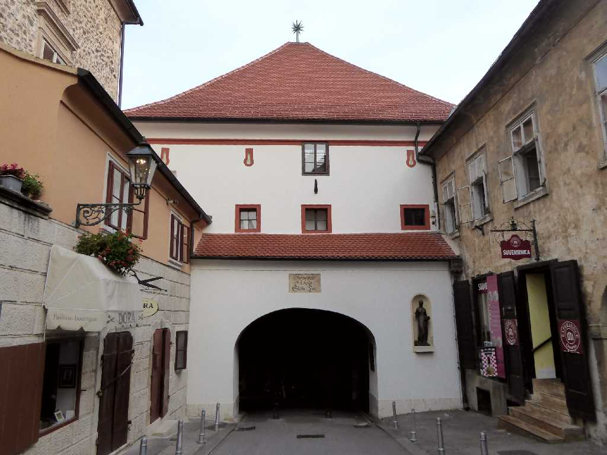
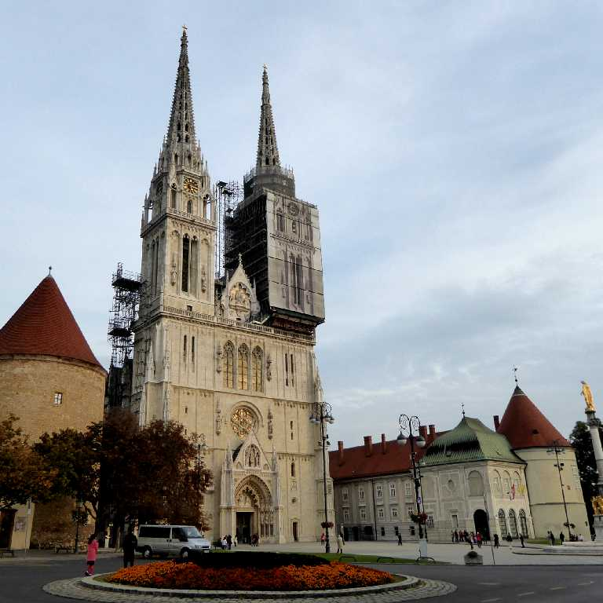
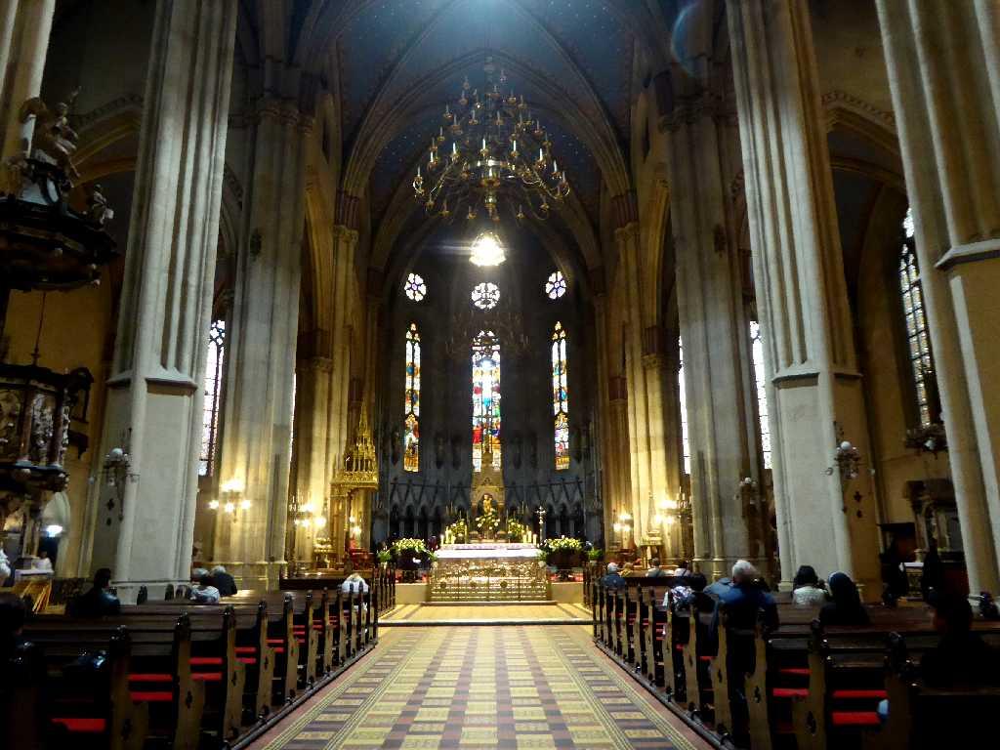
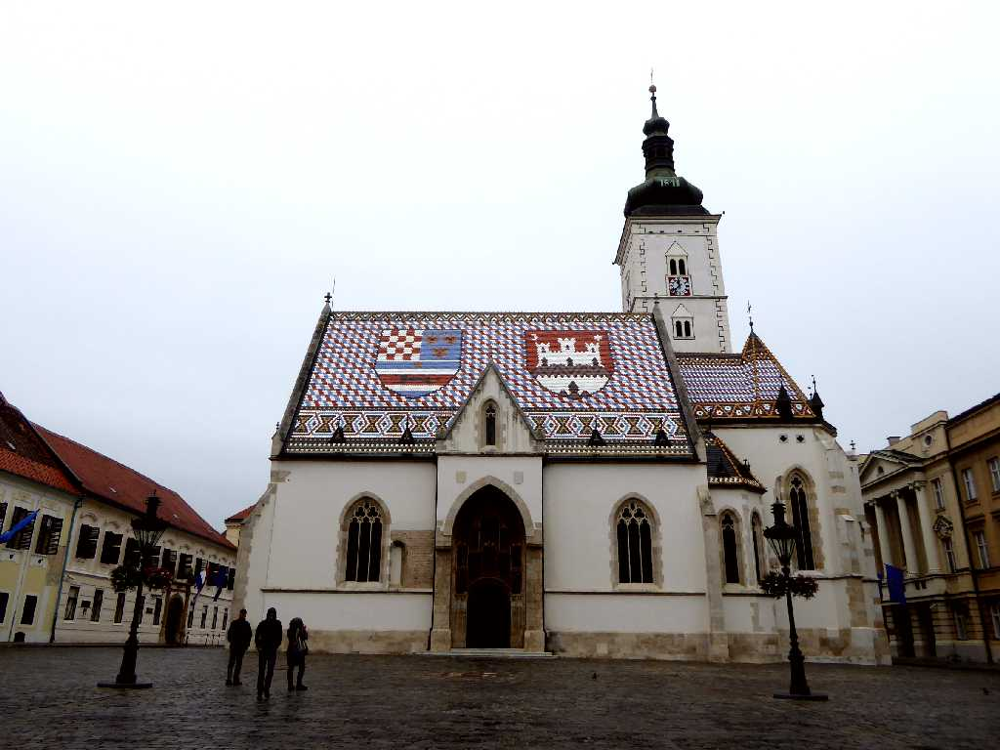
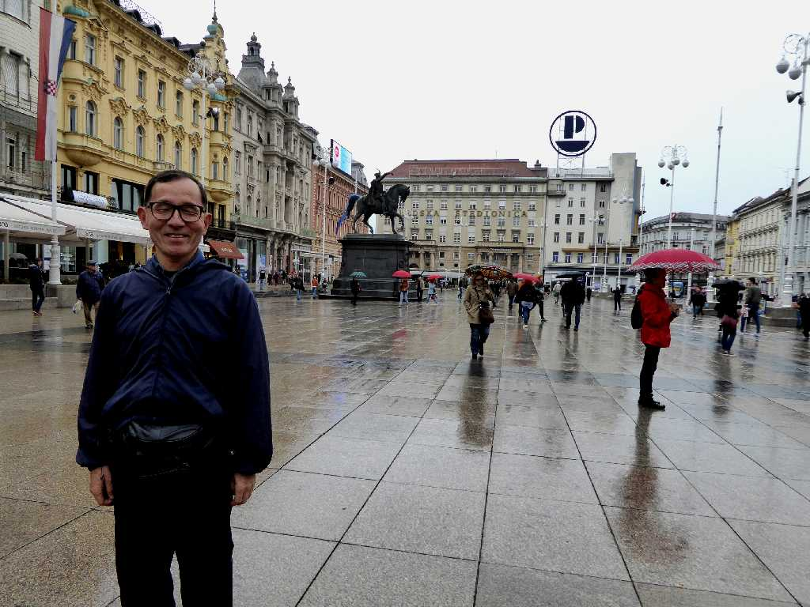

August 1989 Zagreb
ザグレブのシンボルである高さ１０５ｍの大聖堂が美しい ネクタイはクロアチア兵士が使用したスカーフが起源でフランス語では cravate クロアチア人の意味である

Trg bana Josipa Jelačića
東欧８ヶ国周遊のユーゴスラビア時代以来約３０年ぶりの再訪問でクロアチアの首都となり街の中心地イエラチッチ広場

Uspinjača
全長６６m標高差３０mの世界一短いケーブルカー

Sunken Mural Park

Kamenita vrata
１３世紀頃に大聖堂側の聖職者の街と聖マルコ教会側の商人の街を分かつ城壁に創られ１８世紀に改修された石の門

Zagrebačka katedrala
１３世紀に創られ１８８０年の大火災で再建されたネオゴシック様式の聖母被昇天大聖堂は二つの塔の高さが１０５mとクロアチアで最も高い建造物となっている

Oltar Zagrebačka katedrala
クロアチアのカカトリック教会の中心となる大司教座が置かれている

Crkva sv. Marka
１４世紀にロマネスク様式で創られ１９世紀にネオゴシック様式で改築された色瓦のクロアチア王国の国章(左)とザグレブ市の紋章(右)が美しい聖マルコ教会

October 10 2016 Trg bana Josipa Jelačića Zagreb